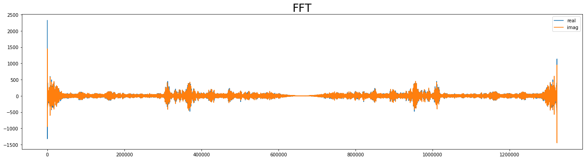

FFT Fun
 FFT Representation
FFT Representation
FFT Magic - Time Domain to Frequency Domain Signal Visualization
Anyone with a background in Physics or Engineering knows to some degree about signal analysis techniques, what these technique are and how they can be used to analyze, model and classify signals.
Let’s start with Fun stuff ! Everyone heard of FFT word in their lifetime. Let’s dive deep into Frequency Domain for more details.
Let’s plot some sound files in time domain.
# required library imports
import librosa
import librosa.display
import scipy as sp
import IPython.display as ipd
import matplotlib.pyplot as plt
import numpy as np
# load audio file in the player
audio_path = "audio/Data_00023.wav"
ipd.Audio(audio_path)
# load audio file
signal, sr = librosa.load(audio_path)
Below is the time domain representation of the signal.
# plot waveform
plt.figure(1)
plt.figure(figsize=(18,5))
plt.plot(signal,'b')
plt.xlabel('sample rate * time')
plt.ylabel('energy')
plt.grid()
Isn’t that interesting ?
Let’s take this time domain signal into frequency domain and do some more interesting stuff !
import scipy as sp
from scipy import fftpack
import matplotlib as mpl
tf = 60 # Final time
dt = 0.1 # Time step
t = np.arange(0,tf,dt) # Signal sample times
Calculate FFT
sample_freq = sp.fftpack.fftfreq(len(signal),d=dt) # Frequency values (+,-)
sig_fft = sp.fftpack.fft(signal) # Calculate FFT
plt.rc('figure', figsize = (18, 5)) # Reduces overall size of figures
plt.rc('axes', labelsize=24, titlesize=24)
plt.rc('figure', autolayout = True) # Adjusts supblot parameters for new size
plt.figure(2)
plt.title("FFT",fontsize=24)
plt.plot(sig_fft.real, label='real')
plt.plot(sig_fft.imag,label='imag')
plt.legend(loc=1)

Calculate and plot power spectrum for $f>0$.
pfs = np.where(sample_freq>0) # Select postive frequencies
freqs = sample_freq[pfs]
power = abs(sig_fft)[pfs]**2
plt.figure(3)
plt.title("FFT (power)",fontsize=24)
plt.xlabel("$f$")
plt.plot(freqs,power,'b')
plt.grid()
/home/jay/anaconda3/lib/python3.7/site-packages/matplotlib/figure.py:2366: UserWarning: This figure includes Axes that are not compatible with tight_layout, so results might be incorrect.
warnings.warn("This figure includes Axes that are not compatible "
Filter and inverse transform
Crude low-pass filter: cut out all frequencies greater than 25 KHz.
sig_fft[abs(sample_freq)> 25] = 0
Calculate inverse FFT:
sig_filtered = sp.fftpack.ifft(sig_fft)
plt.figure(4)
plt.title("filtered signal",fontsize=14)
plt.xlabel("$t$")
plt.plot(np.real(sig_filtered),'b')
plt.grid()
Voila !
This is our original time domain signal !
Let’s Have More deep understanding of Time domain signal, Frequency Domain signal and Time-Frequency Representation! Let Plot all three things together and Have python fun !
from mpl_toolkits.mplot3d import Axes3D
import numpy as np
from scipy.fftpack import fft
import matplotlib.pyplot as plt
from matplotlib import animation
from matplotlib import cm
t_n = 10
N = 1000
T = t_n / N
f_s = 1 / T
def get_fft_values(y_values, T, N, f_s):
f_values = np.linspace(0.0, 1.0 / (2.0 * T), N // 2)
fft_values_ = fft(y_values)
fft_values = 2.0 / N * np.abs(fft_values_[0:N // 2])
return f_values, fft_values
x_value = np.linspace(0, t_n, N)
amplitudes = [4, 6, 8, 10, 14]
frequencies = [6.5, 5, 3, 1.5, 1]
y_values = [amplitudes[ii] * np.sin(2 * np.pi * frequencies[ii] * x_value) for ii in range(0, len(amplitudes))]
composite_y_value = np.sum(y_values, axis=0)
f_values, fft_values = get_fft_values(composite_y_value, T, N, f_s)
colors = ['k', 'b', 'b', 'b', 'b', 'b', 'b', 'b', 'b']
fig = plt.figure(figsize=(8, 8))
ax = fig.add_subplot(111, projection='3d')
ax.set_xlabel("\nTime [s]", fontsize=16)
ax.set_ylabel("\nFrequency [Hz]", fontsize=16)
ax.set_zlabel("\nAmplitude", fontsize=16)
y_values_ = [composite_y_value] + list(reversed(y_values))
frequencies = [1, 1.5, 3, 5, 6.5]
def init():
# Plot the surface.
for ii in range(0, len(frequencies)):
signal = y_values_[ii]
color = colors[ii]
length = signal.shape[0]
x = np.linspace(0, 10, 1000)
y = np.array([frequencies[ii]] * length)
z = signal
if ii == 0:
linewidth = 4
else:
linewidth = 2
ax.plot(list(x), list(y), zs=list(z), linewidth=linewidth, color=color)
x = [10] * 75
y = f_values[:75]
z = fft_values[:75] * 3
ax.plot(list(x), list(y), zs=list(z), linewidth=2, color='red')
plt.tight_layout()
return fig,
def animate(i):
# azimuth angle : 0 deg to 360 deg
ax.view_init(elev=10, azim=i*4)
return fig,
# Animate
ani = animation.FuncAnimation(fig, animate, init_func=init,
frames=90, interval=50, blit=True)
plt.show()
fn = 'rotate_azimuth_angle_3d_surf'
ani.save(fn+'.gif',writer='imagemagick',fps=1000/50)
Let’s get ready to blow your Mind !

References :
- http://ataspinar.com/2018/04/04/machine-learning-with-signal-processing-techniques/
- FFT, Valerio Velardo - The Sound of AI, https://github.com/musikalkemist/AudioSignalProcessingForML
Jay Patel
PhD Student in Electrical & Computer Engineering
My research interests include electronics & communications, distributed underwater robotics, mobile computing and programmable matter.